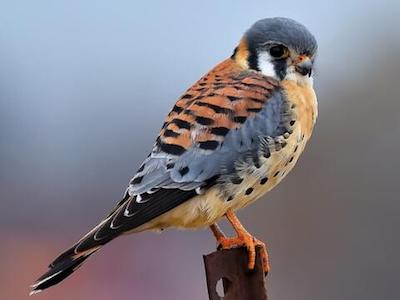
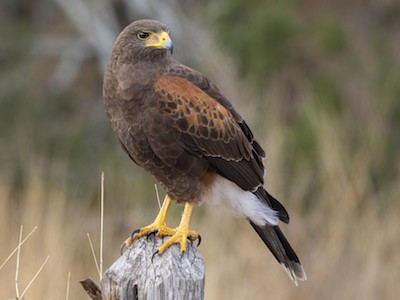

Wow! Based on your answers... You share similarities with the American Kestrel (Falco sparverius) with a little bit of Harris's Hawk (Parabuteo unicinctus)

The American Kestrel can move at speeds up to 40 miles per hour with incredible maneuverability. Standing around 20-24 inches, the American Kestrel is on the smaller side. This is what connects your height and athleticism to the American Kestrel. Other similarities are drawn from you preferring to hangout with friends at home instead of going out. The American Kestrel and Harris's Hawk are social birds but, the American Kestrel tends to only socialize with its own family, less likely to socialize with other Kestrel's in unfamiliar territory, just like you enjoy hanging out with the people you're close to, but you'd rather stay in a comfortable environment.
Click on Ceasar to Restart!